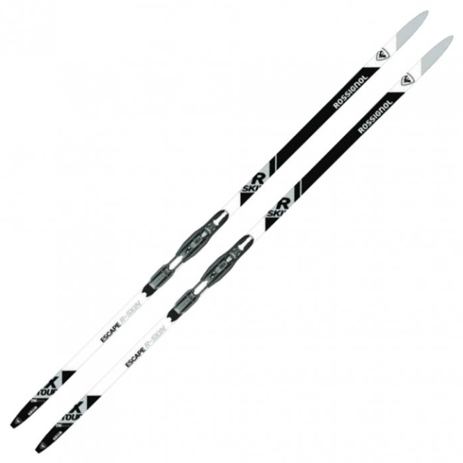

Les skis de fond se distinguent des autres modèles de skis similaires par la présence d'une zone d'accroche sous le patin (sous le pied) pour donner de l'impulsion, et de zones lisses à l'avant et à l'arrière du ski. Les skis de fond se démarquent aussi par leur importante longueur, car ils mesurent en moyenne 20 à 25 cm de plus que la taille du skieur.
| Nom | Image | Prix |
| X-TOUR ESCAPE R-SKIN TOUR |  | 234 euros |